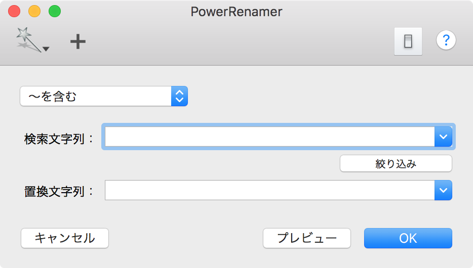
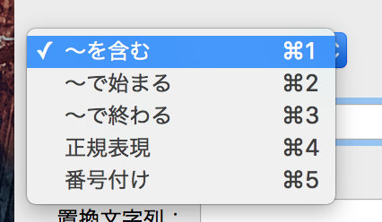

Finder で選択されているファイルやフォルダに対して実行されるので、Dock や スクリプトメニューなど、何らかのランチャーに登録して起動してください。
Finder で名前を一括して変更したいファイル群を選択して、（何らかのランチャー上から）PowerRenamer を起動します。すると以下のようなダイアログが表示されます。

ここで、「検索文字列」のテキストフィールドに、ファイル名中の置き換えたい文字列を指定しください。「置換文字列」 のところで、どの文字列に置き換えるかを指定します。
「検索文字列」のポップアップメニューで、置き換えたい文字列の条件を設定する事ができます。 
そして、OK ボタンを押せば選択したファイルの名前に含まれている文字列が全て置き換えられます。
ちなみに、OK ボタンを押した時点で Finder で選択されている物を対象にしますので、PowerRenamer が起動した後でも、名前を変更する対象を変える事ができます。